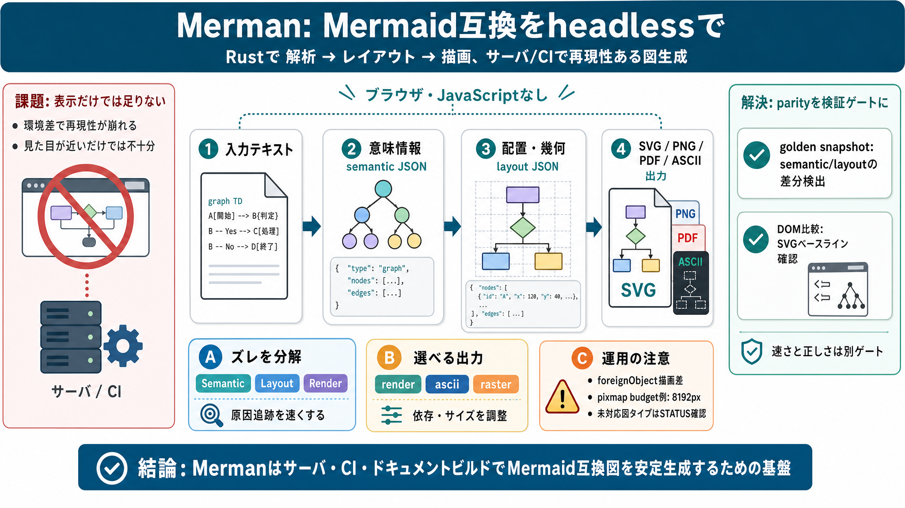

Releases · mermaid-js/mermaid - GitHub
Backports the following security fixes from Mermaid v11.15.0: CVE-2026-41150: fix(gantt): limit loop if excluding all da…

Backports the following security fixes from Mermaid v11.15.0: CVE-2026-41150: fix(gantt): limit loop if excluding all da…
Mermaid vs PlantUML in 2026: Which to Pick for Engineering Docs ... Mermaid.js Tutorial: The Complete Guide to Diagrams …
Update the bundled mermaid.js. Find the latest version of mermaid on https://github.com/mermaid-js/mermaid/releases. The…
Mermaid is a JavaScript-based diagramming and charting tool that uses Markdown-inspired text definitions and a renderer …
Mermaid is an engine that enables you to draw beautiful, highly detailed SVG diagrams and flowcharts using Markdown. It …